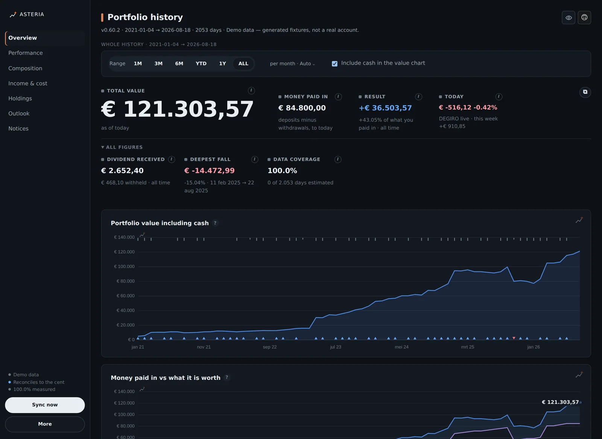
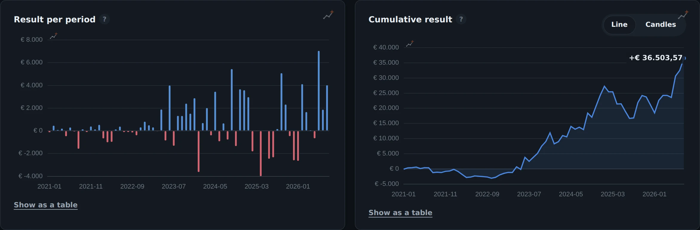
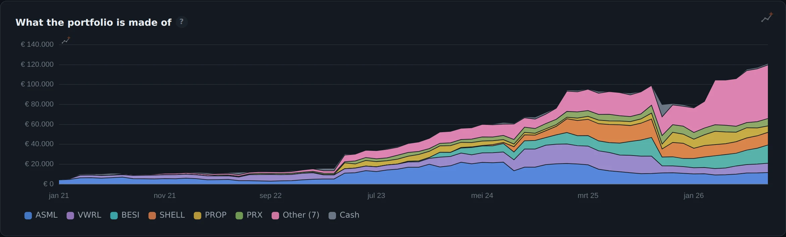
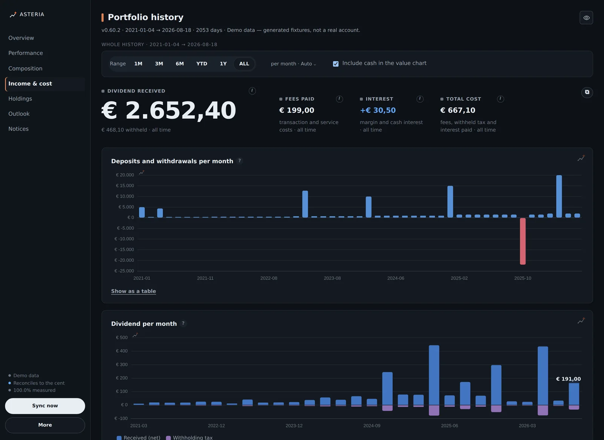
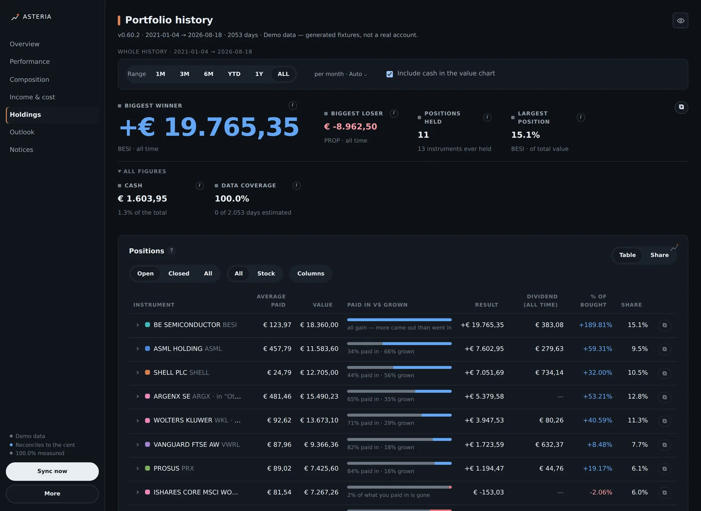
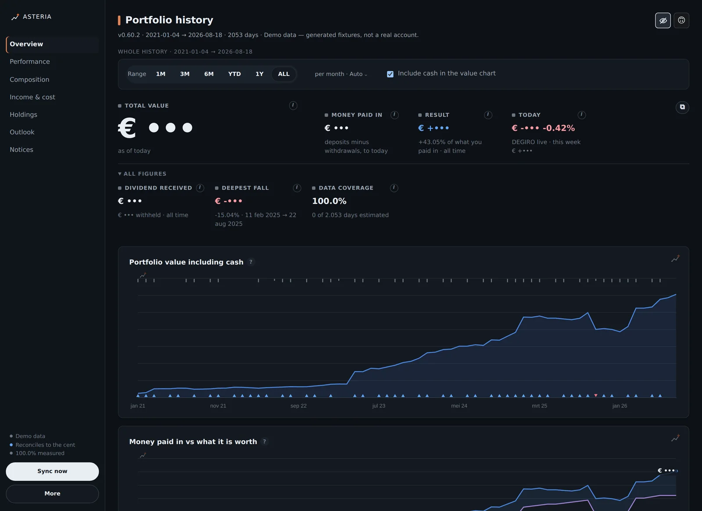
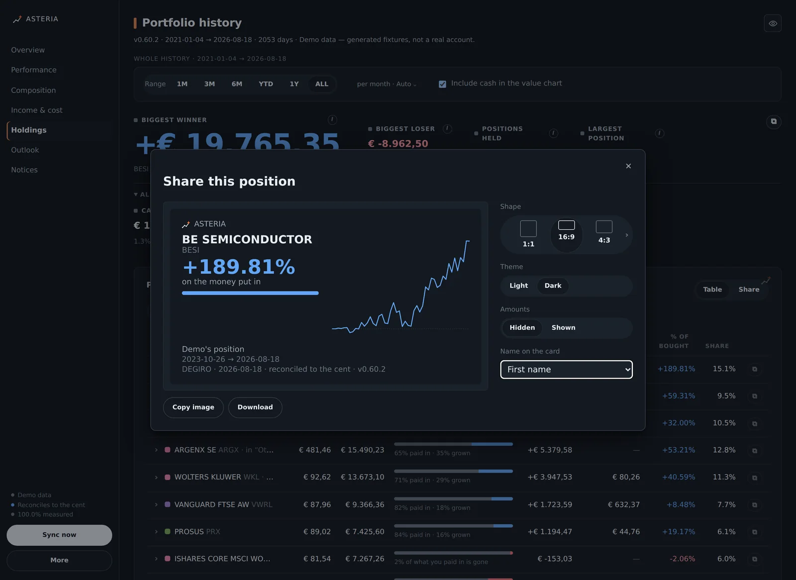
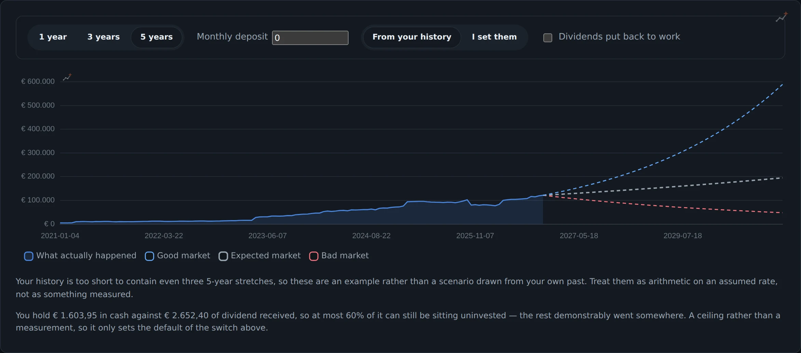

Asteria · Chrome-extensie
Wat je rekening waard was, elke dag.
DEGIRO laat je zien wat je portefeuille vandaag waard is. Niet wat hij gisteren waard was, of in maart 2022, of de dag voordat je die ene positie kocht. Die grafiek bestaat niet in hun interface. Asteria bouwt hem terug uit je eigen transacties, cashmutaties en dagelijkse slotkoersen.

Het probleem
Een broker weet precies wat je bezit, maar bewaart geen beeld van hoe je daar bent gekomen. Je ziet een stand, geen verloop. Wil je weten of die +40% uit je keuzes komt of uit het geld dat je bent blijven inleggen, dan is er niets om naar te kijken.
Asteria reconstrueert per dag. Het rekent terug wat elke positie op elke dag waard was, telt het cash erbij, en controleert de uitkomst tegen het totaal dat DEGIRO zelf noemt. Klopt dat niet tot op de cent, dan staat dat er.
Periodes herberekenen
Kies 3M en elk cijfer eronder is over die drie maanden gemeten, niet uit een jaartotaal gesneden. Geankerd op de waarde van de dag ervoor, zodat de eerste dag een echte beweging is, en dag op dag doorgerekend, zodat een storting binnen de periode het rendement niet mooier maakt.
Elk getal heeft een periode
Boven de cijfers staat één regel die de periode in woorden en in exacte datums noemt. En begint een as niet op nul, dan staat dat onder de grafiek. Een uitsnede van een kwartaal die op een verdubbeling lijkt is de oudste truc die er is.
Wat een cijfer niet zegt
Bij elk getal een i die uitlegt wat het betekent en, nuttiger, wat het niet betekent. Dat "betaalde kosten" niet meerekent wat een marginpositie kost. Dat een storting nooit winst is. Dat de grootste stijger een positie is en geen transactie.
De zeven pagina's
Overview, Performance, Composition, Income & cost, Holdings, Outlook en Notices. Hieronder een deel ervan.







Waar de data blijft
Nergens. Er zit geen server achter en er is geen account om aan te maken. Alles landt in de database van je eigen browser.
- InloggenGeen wachtwoord en geen API-sleutel. Het gebruikt de sessie die je eigen login al in de browser heeft gezet.
- Alleen lezenHet haalt je transacties, cashmutaties en koersen op. Het kan geen order plaatsen, wijzigen of intrekken.
- Rustig aanEén verzoek per 1,1 seconde, met opzet. De eerste synchronisatie duurt daardoor een paar minuten.
- Geen telemetrieGeen analytics, geen crashrapportage. Dat is afgedwongen en niet beloofd: de extensie mag maar twee hosts benaderen en kan geen script van buiten laden.
- LosknippenVerbinding weggooien kan zonder de historie te verliezen. Elk cijfer blijft staan, bevroren op de laatste synchronisatie en op elk scherm gedateerd.
- BugmeldenEen bugrapport bevat codes, aantallen en verhoudingen. Geen bedragen, geen namen van instrumenten, geen rekeningnummer.
Wat het niet is
Geen product van DEGIRO. Asteria is een persoonlijk project en staat op geen enkele manier in verbinding met DEGIRO. Die naam staat hier alleen om te zeggen waar het op aansluit. Geautomatiseerd je eigen rekening uitlezen kan botsen met hun voorwaarden: alleen lezen, je eigen gegevens, uit je eigen ingelogde browser is de mildste vorm daarvan, maar langzaam is niet hetzelfde als toegestaan. Ga daar zelf na wat je ermee wil.
Geen advies. Er staat hier geen aanbeveling om iets te kopen of te verkopen. Het is een rekenmachine op je eigen verleden.
Alle beelden op deze pagina zijn demo-data. De extensie heeft een demomodus met gegenereerde cijfers, en die is gebruikt voor elke schermafdruk hier. Geen enkel bedrag op deze pagina komt uit een echte rekening. Je ziet dat ook in de regel onder de titel van elk beeld staan.
Het gaat kapot. Er is geen openbare koppeling om op te bouwen, dus de bron kan zonder aankondiging veranderen. Als een veld verdwijnt zegt de extensie dat met een rode balk in plaats van stil met een nul verder te rekenen.
Zelf proberen
Het is een Chrome-extensie die je zelf laadt: downloaden, uitpakken, ontwikkelaarsmodus aan, map kiezen. Ongeveer twee minuten, geen terminal en geen Node. In de repo staat een stap-voor-stap handleiding, en je kunt de demo met voorbeelddata openen voordat je hem op je eigen rekening richt.